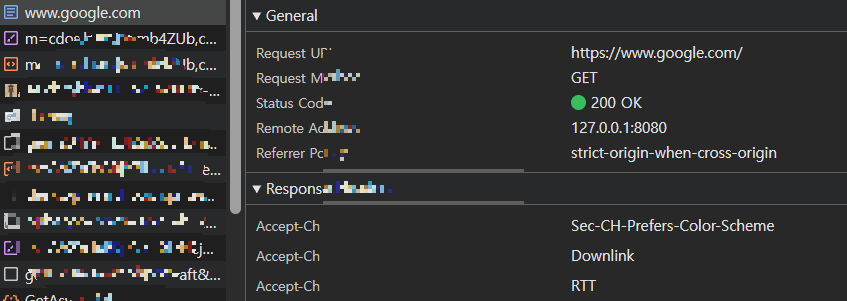
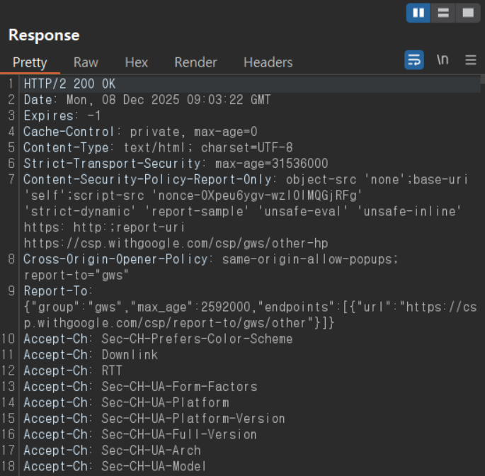
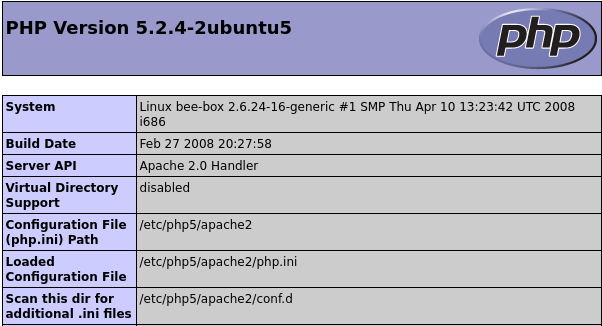

모의해킹에서 대상을 지정하면 가장 처음에 수행하게 되는 것이 바로 정보 수집이다.
수집될 정보는 크게 두 가지로 분류한다
1. 웹 애플리케이션을 서비스하기 위한 호스트 환경( OS, Web server, Web Framework etc..)
2. 웹 애플리케이션 자체에 대한 정보
호스트 환경에 대한 정보 수집을 통해 관련된 알려진 취약점을 쉽게 찾아 공격에 활용하기 위함
배너를 통한 정보 수집
웹서버와 관련된 정보를 간단하게 확인할 수 있는 방법은 응답 메시지의 서버 헤더를 살펴보는 것
서버의 응답을 통해 정보를 수집하는 방법을
- 배너 그래빙(banner grabbing)이라 함
헤더를 통해 (OS, 웹 서버 버전, PHP 버전 정보, OpenSSl 정보) 알 수 있습니다.
<불필요한 정보를 노출>
º X-powered-By
º X-ASPNET-VERSION
Tip!
서버의 응답을 통해 버전 정보를 수집할 수 있다.
확인하는 방법 2가지
1. 개발자도구 - Network탭 (웹사이트에 접속하면 그때 전송된 요청 내역이 모두 표시됨)

2. 버프스위트로 확인할 수 있다. (history 기능)

기본 설치 파일을 통한 시스템 정보 수집
종종 웹 애플리케이션을 운영하기 위한 웹 서버와 웹 프레임워크, 기타 구성 요소를 설치할 때 기본으로 설치되는 파일로 인해
호스트 환경에 대한 정보가 노출되는 경우가 있음
Ex) PHP로 개발된 경우 phpinfo.php라는 기본 설치 파일을 통해 PHP 환경 정보, 환경 변수, 호스트 관련 정보가 노출될 수 있음
